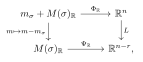
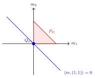

The set of $\varphi \in \mathrm{PSH}_{\mathrm{tor}}(X,\theta )$;
the set of $F\in \mathcal{P}(N_{\mathbb {R}},P_ D)$, and
the set of closed proper convex functions $G\in \mathrm{Conv}(M_{\mathbb {R}})$ satisfying
\[ G|_{M_{\mathbb {R}}\setminus P_ D}\equiv \infty . \]
Chapter 18 · Toric and convex geometry · Tag E0A57B09F819
The pluripotential theory
From Singularities in global pluripotential theory · 12.3 The pluripotential theory
We continue to use the notations in section 12.1.
Proof. The proof is similar to that of theorem 5.2.3, but due to its importance, we give the details. Again, the correspondence between 2 and 3 follows easily from proposition A.2.12.
Given $\varphi $, we can construct $F_{\varphi }$ in 2 as explained earlier in (12.23). Conversely, suppose that $F\in \mathcal{P}(N_{\mathbb {R}},P_ D)$, then $F\preceq F_{V_{\theta }}$ by theorem 12.2.12. Then
\[ \operatorname{Trop}^*\left(F-F_{\theta }\right)\in \mathrm{PSH}\left(T(\mathbb {C}),\theta |_{T(\mathbb {C})}\right) \]
by 5.2.1. Since $F\preceq F_{V_{\theta }}$, we see that $\operatorname{Trop}^*(F-F_{\theta })$ is bounded from above. It follows that Grauert–Remmert's extension theorem theorem 1.2.9 is applicable, and this function extends to a unique $\theta $-psh function $\varphi $. The uniqueness of the extension guarantees that $\varphi \in \mathrm{PSH}_{\mathrm{tor}}(X,\theta )$.
The two maps are inverse to each other by construction. $\square$
We fix a model potential $\phi \in \mathrm{PSH}_{\mathrm{tor}}(X,\theta )_{>0}$ with Newton body $\Delta (\theta ,\phi )$.
A similar argument guarantees the following:Corollary 12.3.2. There is a canonical bijection between the following sets:
The set of $\varphi \in \mathrm{PSH}_{\mathrm{tor}}(X,\theta ;\phi )$,
the set of $F\in \mathcal{P}(N_{\mathbb {R}},\Delta (\theta ,\phi ))$, and
the set of closed proper convex functions $G\in \mathrm{Conv}(M_{\mathbb {R}})$ satisfying
\[ G|_{M_{\mathbb {R}}\setminus \Delta (\theta ,\phi )}=\infty . \]
Moreover, under these correspondences, we have the following bijections:
The set $\mathcal{E}_{\mathrm{tor}}(X,\theta ;\phi )$,
the set of $F\in \mathcal{E}(N_{\mathbb {R}},\Delta (\theta ,\phi ))$, and
the set of closed proper convex functions $G\in \mathrm{Conv}(M_{\mathbb {R}})$ satisfying
\[ \overline{\operatorname{Int}\{ G<\infty \} }=\Delta (\theta ,\phi ). \]
\[ \begin{aligned} \mathrm{PSH}_{\mathrm{tor}}(X,\theta ;\phi )\coloneqq & \{ \varphi \in \mathrm{PSH}_{\mathrm{tor}}(X,\theta ):\varphi \preceq \phi \} ,\\ \mathcal{E}_{\mathrm{tor}}(X,\theta ;\phi )\coloneqq & \mathcal{E}(X,\theta ;\phi )\cap \mathrm{PSH}_{\mathrm{tor}}(X,\theta ). \end{aligned} \]
The proofs of the following results are similar to the ample case studied in chapter 5. We omit the details.
Proposition 12.3.3. Given $\varphi \in \mathrm{PSH}_{\mathrm{tor}}(X,\theta )$ and $C\in \mathbb {R}$. We have
\[ F_{\varphi +C}=F_{\varphi }+C,\quad G_{\varphi +C}=G_{\varphi }-C. \]
Proposition 12.3.4. Given $\varphi ,\psi \in \mathrm{PSH}_{\mathrm{tor}}(X,\theta )$, assume that $\varphi \land \psi \not\equiv -\infty $, then $\varphi \land \psi \in \mathrm{PSH}_{\mathrm{tor}}(X,\theta )$ and
\[ F_{\varphi \land \psi }=F_{\varphi }\land F_{\psi },\quad G_{\varphi \land \psi }=G_{\varphi }\lor G_{\psi }. \]
Proposition 12.3.5. Let $(\varphi _ i)_{i\in I}$ be a family in $\mathrm{PSH}_{\mathrm{tor}}(X,\theta )$ uniformly bounded from above. Then $\operatorname *{sup}_{i\in I}{}\! {}^{*} \varphi _ i\in \mathrm{PSH}_{\mathrm{tor}}(X,\theta )$ and
\[ F_{\operatorname *{sup}_{i\in I}{}\! {}^{*}\varphi _ i}=\bigvee _{i\in I}F_{\varphi _ i},\quad G_{\operatorname *{sup}_{i\in I}{}\! {}^{*}\varphi _ i}=\operatorname{cl}\bigwedge _{i\in I} G_{\varphi _ i}. \]
Moreover, if $I$ is finite, then
\[ G_{\bigvee _{i\in I}\varphi _ i}=\bigwedge _{i\in I} G_{\varphi _ i}. \]
Similarly, if $\{ \varphi _ i\} _{i\in I}$ is a decreasing net in $\mathrm{PSH}_{\mathrm{tor}}(X,\theta )$ such that $\inf _{i\in I}\varphi _ i\not\equiv -\infty $, then $\inf _{i\in I}\varphi _ i\in \mathrm{PSH}_{\mathrm{tor}}(X,\theta )$ and
\[ F_{\inf _{i\in I}\varphi _ i}=\bigwedge _{i\in I}F_{\varphi _ i},\quad G_{\inf _{i\in I}\varphi _ i}=\bigvee _{i\in I}G_{\varphi _ i}. \]
Proposition 12.3.6. Let $\varphi \in \mathrm{PSH}_{\mathrm{tor}}(X,\theta )$. Then $P_{\theta }[\varphi ]\in \mathrm{PSH}_{\mathrm{tor}}(X,\theta )$ and
12.44
\begin{equation} \label{eq:toricPenvbig} G_{P_{\theta }[\varphi ]}(x)= \begin{cases} G_{V_{\theta }}(x),& \textup{if } x\in \Delta (\theta ,\varphi );\\ \infty ,& \textup{otherwise}. \end{cases} \end{equation}
Proof. By (3.4),
\[ P_{\theta }[\varphi ]=\operatorname *{sup}_{C\in \mathbb {R}}{}\! {}^{*}\bigl ((\varphi +C)\land V_{\theta }\bigr ). \]
Hence $P_{\theta }[\varphi ]\in \mathrm{PSH}_{\mathrm{tor}}(X,\theta )$ by proposition 12.3.3, proposition 12.3.4, proposition 12.3.5. The same results give
\[ G_{P_{\theta }[\varphi ]}=\operatorname{cl}\inf _{C\in \mathbb {R}}\left(G_{V_{\theta }}\lor (G_{\varphi }-C)\right). \]
Put
\[ K=\inf _{C\in \mathbb {R}}\left(G_{V_{\theta }}\lor (G_{\varphi }-C)\right). \]
If $x\in \operatorname{Dom}G_{\varphi }$, then $G_{\varphi }(x)-C\leq G_{V_{\theta }}(x)$ for all large enough $C$, so $K(x)=G_{V_{\theta }}(x)$. If $x\notin \operatorname{Dom}G_{\varphi }$, then $K(x)=\infty $. By proposition A.2.9, we have $\Delta (\theta ,\varphi )=\overline{\operatorname{Dom}G_{\varphi }}$. Moreover, theorem 12.2.12 gives $F_{V_{\theta }}\sim \operatorname{Supp}_{P_ D}$, hence $G_{V_{\theta }}\sim \chi _{P_ D}$ by Legendre duality. In particular, $G_{V_{\theta }}$ is finite and continuous on $P_ D$. Thus the lower semicontinuous regularization of $K$ is equal to $G_{V_{\theta }}$ on $\Delta (\theta ,\varphi )$ and equal to $\infty $ outside $\Delta (\theta ,\varphi )$. $\square$
Corollary 12.3.7. Let $\varphi ,\psi \in \mathrm{PSH}_{\mathrm{tor}}(X,\theta )$. Then the following are equivalent:
$\varphi \preceq _ P \psi $;
$\varphi \preceq _{\mathcal{I}} \psi $;
$\Delta (\theta ,\varphi )\subseteq \Delta (\theta ,\psi )$.
Proof. 1 $\iff $ 2. This follows from the $\mathcal{I}$-goodness of $\varphi $ and $\psi $, see example 7.4.5.
1 $\iff $ 3. When $\varphi ,\psi \in \mathrm{PSH}_{\mathrm{tor}}(X,\theta )_{>0}$, this follows from proposition 12.3.6.
In general, fix an ample toric-invariant divisor $H$ on $X$ and a toric-invariant Hermitian metric $h_ H$ on $\mathcal{O}_ X(H)$ such that $\omega _ H\coloneqq \mathrm{dd}^{\mathrm{c}}h_ H$ is a Kähler form. We perturb $L$ to $L+m^{-1}H$ for $m\in \mathbb {Z}_{>0}$, then thanks to A.3.7, we find that
\[ \Delta (\theta +m^{-1}\omega _ H,\varphi )\coloneqq m^{-1}\Delta (m\theta +\omega _ H,m\varphi )=\Delta (\theta ,\varphi )+m^{-1}\Delta \left(\mathcal{O}_ X(H)\right). \]
Then since $\varphi ,\psi \in \mathrm{PSH}_{\mathrm{tor}}(X,\theta +m^{-1}\omega _ H)_{>0}$, we know that $\varphi \preceq _ P \psi $ if and only if
\[ \Delta (\theta ,\varphi )+m^{-1}\Delta \left(\mathcal{O}_ X(H)\right)\subseteq \Delta (\theta ,\psi )+m^{-1}\Delta \left(\mathcal{O}_ X(H)\right) \]
for any $m\in \mathbb {Z}_{>0}$. The latter condition is equivalent to $\Delta (\theta ,\varphi )\subseteq \Delta (\theta ,\psi )$. $\square$
Corollary 12.3.8. There is a canonical bijection
\[ \mathrm{PSH}_{\mathrm{tor}}(X,\theta )/\sim _{P}=\mathrm{PSH}_{\mathrm{tor}}(X,\theta )/\sim _{\mathcal{I}}\rightarrow \left\{ K\in \mathcal{K}_ n: K \subseteq P_ D \right\} . \]
Here $\mathcal{K}_ n$ denotes the set of convex bodies in $\mathbb {R}^ n$, as in section C.1.
Proof. Thanks to corollary 12.3.7, we have the equality
\[ \mathrm{PSH}_{\mathrm{tor}}(X,\theta )/\sim _{P}=\mathrm{PSH}_{\mathrm{tor}}(X,\theta )/\sim _{\mathcal{I}}, \]
and the map
\[ \mathrm{PSH}_{\mathrm{tor}}(X,\theta )/\sim _{\mathcal{I}}\rightarrow \left\{ K\in \mathcal{K}_ n: K \subseteq P_ D \right\} \]
is well-defined and injective.
In order to see the surjectivity, take $K\in \mathcal{K}_ n$, $K\subseteq P_ D$. Let $\chi _ K$ be the characteristic function of $K$ as defined in example A.1.4. Since $\chi _ K$ satisfies Condition 3 of theorem 12.3.1, we can find $\varphi \in \mathrm{PSH}_{\mathrm{tor}}(X,\theta )$ so that $\chi _ K=G_{\varphi }$. Then $\Delta (\theta ,\varphi )=K$ due to proposition A.2.9. $\square$
Proposition 12.3.9. Let $\varphi _0,\varphi _1\in \mathrm{PSH}_{\mathrm{tor}}(X,\theta )$. There is a canonical bijection between the following sets:
The set of $T_ c$-invariant subgeodesics from $\varphi _0$ to $\varphi _1$;
the set of convex functions $F\colon N_{\mathbb {R}}\times (0,1)\rightarrow \mathbb {R}$ such that for each $r\in (0,1)$, the function
12.47\begin{equation} \label{eq:Ftdefsubgeo} F_ r\colon N_{\mathbb {R}}\rightarrow \mathbb {R},\quad n\mapsto F(n,r) \end{equation}satisfies $F_ r\to F_{\varphi _1}$ (resp. $F_ r\to F_{\varphi _0}$) everywhere as $r\to 1-$ (resp. $r\to 0+$).
Proof. We begin with a subgeodesic $(\varphi _ t)_{t\in (0,1)}$ from $\varphi _0$ to $\varphi _1$. Then we define $F\colon N_{\mathbb {R}}\times (0,1)\rightarrow \mathbb {R}$ as follows:
\[ F(n,t)=F_{\varphi _ t}(n). \]
Define $F_ t$ as in (12.47), we have
\[ \operatorname{Trop}^* F_ t-\operatorname{Trop}^* F_{\theta }=\varphi _ t,\quad t\in (0,1). \]
Let $t_ j\to 0+$. Since $\varphi _{t_ j}\to \varphi _0$ in $L^1$, after passing to a subsequence we have almost-everywhere convergence on $X$. Restricted to the open torus and using the tropical coordinates, this gives $F_{t_ j}\to F_{\varphi _0}$ almost everywhere on $N_{\mathbb R}$. Since the $F_{t_ j}$'s are convex and locally uniformly bounded above, theorem A.1.18 upgrades this to pointwise convergence everywhere. As the limit is independent of the subsequence, $F_ t\to F_{\varphi _0}$ everywhere as $t\to 0+$. Similarly, $F_ t\to F_{\varphi _1}$ everywhere as $t\to 1-$.
Next we show that $F$ is convex. Let $p_1\colon X\times S\rightarrow X$ be the projection, where
\[ S\coloneqq \{ z\in \mathbb {C}: \mathrm{e}^{-1}<|z|^2<1\} . \]
Since $(\varphi _ t)_{t\in (0,1)}$ is a subgeodesic, its complexification $\Phi $ is $p_1^*\theta $-psh. Recall that $\Phi $ is defined as
12.48
\begin{equation} \label{eq:Phixz} \Phi (x,z)=\operatorname{Trop}^*\left( F_{-\log |z|^2}-F_{\theta } \right)(x). \end{equation}
In particular, $\Psi \colon T(\mathbb {C})\times S\rightarrow \mathbb {R}$ defined by
\[ \Psi (x,z)\coloneqq \Phi (x,z)+\operatorname{Trop}^*F_{\theta }(x)=\operatorname{Trop}^*F_{-\log |z|^2}(x) \]
is plurisubharmonic and $T_ c\times S^1$-invariant. Fix a small enough $\epsilon >0$. We can find a decreasing sequence of $T_ c\times S^1$-invariant plurisubharmonic functions $\Psi _ i$ on $T(\mathbb {C})\times S_{\epsilon }$ converging to $\Psi $ everywhere, where
\[ S_{\epsilon }\coloneqq \{ z\in \mathbb {C}: \mathrm{e}^{-1+\epsilon }<|z|^2<\mathrm{e}^{-\epsilon }\} . \]
Let us write
\[ \Psi _ i(x,z)=\operatorname{Trop}^*F_{i,-\log |z|^2}(x) \]
for some $F_ i\colon N_{\mathbb {R}}\times (\epsilon ,1-\epsilon )\rightarrow \mathbb {R}$.
The same computation as in 5.2.1 shows that $F_ i$ is convex. It follows that $F$, as the decreasing limit of $F_ i$, is also convex on $N_{\mathbb {R}}\times (\epsilon ,1-\epsilon )$. Since $\epsilon >0$ is arbitrary, we conclude that $F$ is convex on $N_{\mathbb {R}}\times (0,1)$.
Conversely, suppose that we are given $F$ in 2. We define $\Phi \colon T(\mathbb {C})\times S\rightarrow \mathbb {R}$ using (12.48). The arguments in the previous part can be reversed to show that $\Phi $ is $p_1^*\theta |_{T(\mathbb {C})\times S}$-psh.
By our assumption, for each $t\in (0,1)$, we have
12.49
\begin{equation} \label{eq:Ftupptemp1} F_ t\leq tF_{\varphi _1}+(1-t)F_{\varphi _0}\leq F_{V_{\theta }}+C \end{equation}
for some constant $C\in \mathbb {R}$ independent of the choice of $t$. Therefore, $\Phi $ is bounded from above and hence, by theorem 1.2.9, admits a unique $p_1^*\theta $-psh extension to $X\times S$, which we still denote by $\Phi $. We let
\[ \varphi _ t(x)=\Phi (x,\mathrm{e}^{-t/2}) \]
for all $t\in (0,1)$ and $x\in X$. We claim that $(\varphi _ t)$ is a subgeodesic from $\varphi _0$ to $\varphi _1$.
For this purpose, we only need to show that $(\varphi _ t)_{t\in (0,1)}$ has the correct boundary value. But from our assumption in 2, we know that as $t\to 0+$ (resp. $t\to 1-$), $\varphi _ t\to \varphi _0$ (resp. $\varphi _ t\to \varphi _1$) almost everywhere. In particular, $\sup _ X \varphi _ t\geq -C'$ for some large constant $C'>0$ independent of $t\in (0,1)$. Therefore, together with (12.49), we deduce from proposition 1.5.4 that $\{ \varphi _ t\} _{t\in (0,1)}$ is a relatively compact family with respect to the $L^1$-topology. We need to show that each cluster point $\psi $ as $t\to 0+$ is equal to $\varphi _0$. But we already know that $\psi =\varphi _0$ almost everywhere. Hence we deduce $\psi =\varphi _0$ from proposition 1.2.6. As $t\to 0+$, we have $\varphi _ t\xrightarrow {L^1}\varphi _0$. Similarly, as $t\to 1-$, we have $\varphi _ t\xrightarrow {L^1}\varphi _1$.
The two constructions are inverse to each other by construction. $\square$
Corollary 12.3.10. Let $\varphi _0,\varphi _1\in \mathrm{PSH}_{\mathrm{tor}}(X,\theta )$. Then there is a canonical bijection between the following sets:
The set of $T_ c$-invariant subgeodesics from $\psi _0$ to $\psi _1$, where $\psi _0,\psi _1\in \mathrm{PSH}_{\mathrm{tor}}(X,\theta )$ and $\psi _0\leq \varphi _0$, $\psi _1\leq \varphi _1$;
the set of closed proper convex functions $\Psi $ on $M_{\mathbb {R}}\times \mathbb {R}$ such that there is a closed proper convex function $G\in \mathrm{Conv}(M_{\mathbb {R}})$ satisfying
12.50\begin{equation} \label{eq:Psilower} G(m)+(s\lor 0)\geq \Psi (m,s)\geq G_{\varphi _0}(m)\lor \left( G_{\varphi _1}(m)+s \right) \end{equation}for all $m\in M_{\mathbb {R}}$ and $s\in \mathbb {R}$.
Proof. Let us begin with a subgeodesic $(\psi _ t)_{t\in (0,1)}$ as in 1. Let $F$ be the convex function as in proposition 12.3.9. We extend $F$ to a function $F\colon N_{\mathbb {R}}\times \mathbb {R}\rightarrow \mathbb {R}$ as follows: For any $n\in N_{\mathbb {R}}$, we define
\[ F(n,t)=\begin{cases} F_{\psi _ t}(n),& \textup{if }0<t<1,\\ F_{\psi _0}(n),& \textup{if }t=0,\\ F_{\psi _1}(n),& \textup{if }t=1,\\ \infty ,& \textup{if } t>1 \textup{ or }t<0. \end{cases} \]
Then $F$ is a proper closed convex function on $N_{\mathbb {R}}\times \mathbb {R}$. Let $\Psi $ be the Legendre transform of $F$. Then $\Psi $ is a proper closed convex function on $M_{\mathbb {R}}\times \mathbb {R}$ by theorem A.2.2. By (A.6), for any $m\in M_{\mathbb {R}}$ and $s\in \mathbb {R}$, we have
\[ \begin{aligned} \Psi (m,s)=& \sup _{n\in N_{\mathbb {R}},t\in [0,1]} \left( \langle m,n\rangle + ts-F(n,t)\right)\\ =& \sup _{t\in [0,1]} \left( ts+F_ t^*(m) \right). \end{aligned} \]
Therefore, the latter half of (12.50) follows. Next recall that
\[ \eta \coloneqq \inf _{t\in (0,1)}\psi _ t\in \mathrm{PSH}_{\mathrm{tor}}(X,\theta ), \]
as follows from proposition 4.1.6. Therefore,
\[ \begin{aligned} \Psi (m,s)=& \sup _{n\in N_{\mathbb {R}},t\in [0,1]} \left( \langle m,n\rangle + ts-F(n,t)\right)\\ \leq & \sup _{n\in N_{\mathbb {R}},t\in [0,1]} \left( \langle m,n\rangle + ts-F_{\eta }(n)\right)\\ =& \sup _{t\in [0,1]}ts+G_{\eta }(m)\\ =& (s\lor 0)+G_{\eta }(m). \end{aligned} \]
Conversely, let us begin with a function $\Psi $ as in 2. Let $F$ be the Legendre transform of $\Psi $. We first observe that $F(n,t)=\infty $ for all $n\in N_{\mathbb {R}}$ and $t\not\in [0,1]$. Indeed, the upper bound $\Psi \leq G+(s\lor 0)$ gives
\[ F(n,t)\geq G^*(n)+\sup _{s\in \mathbb {R}}\left(ts-(s\lor 0)\right), \]
and the last supremum is infinite exactly when $t\notin [0,1]$.
For $t\in [0,1]$, the lower bound $\Psi \geq G_{\varphi _0}\lor (G_{\varphi _1}+s)$ implies
\[ \Psi (m,s)\geq (1-t)G_{\varphi _0}(m)+tG_{\varphi _1}(m)+ts. \]
Consequently,
\[ F(n,t)\leq \left((1-t)G_{\varphi _0}+tG_{\varphi _1}\right)^*(n) \leq (1-t)F_{\varphi _0}(n)+tF_{\varphi _1}(n) \]
for all $t\in [0,1]$ and $n\in N_{\mathbb {R}}$. On the other hand, the upper bound $\Psi \leq G+(s\lor 0)$ gives
\[ \begin{aligned} F(n,t)=& \sup _{m\in M_{\mathbb {R}},s\in \mathbb {R}} \left(\langle m,n\rangle +ts-\Psi (m,s)\right)\\ \geq & \sup _{m\in M_{\mathbb {R}},s\in \mathbb {R}} \left(\langle m,n\rangle +ts-G(m)-(s\lor 0)\right)\\ =& G^*(n)+\sup _{s\in \mathbb {R}} \left( ts-(s\lor 0)\right)\\ =& \begin{cases} G^*(n),& \text{if }t\in [0,1],\\ \infty ,& \text{otherwise}. \end{cases}\end{aligned} \]
The convexity of $F$ gives one-sided boundary limits
\[ F_0(n)\coloneqq \lim _{t\to 0+}F(n,t),\quad F_1(n)\coloneqq \lim _{t\to 1-}F(n,t). \]
The estimates above give $F_0\leq F_{\varphi _0}$ and $F_1\leq F_{\varphi _1}$, and also show that $F_0,F_1\in \mathcal{P}(N_{\mathbb {R}},P_ D)$. Let $\psi _0,\psi _1\in \mathrm{PSH}_{\mathrm{tor}}(X,\theta )$ be the corresponding potentials given by theorem 12.3.1. Then $\psi _0\leq \varphi _0$ and $\psi _1\leq \varphi _1$. Applying proposition 12.3.9 to the restriction of $F$ to $N_{\mathbb {R}}\times (0,1)$, we get a subgeodesic $(\psi _ t)_{t\in (0,1)}$ from $\psi _0$ to $\psi _1$. Thus $(\psi _ t)_{t\in (0,1)}$ satisfies 1. The two operations are inverse to each other by construction. $\square$
Corollary 12.3.11. Let $\varphi _0,\varphi _1\in \mathrm{PSH}_{\mathrm{tor}}(X,\theta )\cap \mathrm{PSH}(X,\theta )_{>0}$. Then the following are equivalent:
$\varphi _0\sim _ P \varphi _1$;
there is a subgeodesic from $\varphi _0$ to $\varphi _1$.
If these conditions are satisfied, let $(\varphi _ t)_{t\in (0,1)}$ be the geodesic from $\varphi _0$ to $\varphi _1$. Then $\varphi _ t\in \mathrm{PSH}_{\mathrm{tor}}(X,\theta )$ for all $t\in (0,1)$ and
12.67
\begin{equation} \label{eq:Glinear} G_{\varphi _ t}=(1-t)G_{\varphi _0}+tG_{\varphi _1}. \end{equation}
Proof. The equivalence between 1 and 2 follows from a general fact theorem 6.1.23. In the toric case, 2 $\implies $ 1 can also be argued more directly.
Assume that these conditions are satisfied. Let $(\varphi _ t)_{t\in (0,1)}$ be the geodesic from $\varphi _0$ to $\varphi _1$. Since the geodesic is the upper envelope of toric subgeodesics, $\varphi _ t\in \mathrm{PSH}_{\mathrm{tor}}(X,\theta )$ for all $t\in (0,1)$. Let $\Psi '$ be the proper convex function on $M_{\mathbb {R}}\times \mathbb {R}$ defined by corollary 12.3.10. Then $\Psi '$ is the minimum of all $\Psi $ satisfying (12.50). We claim that
12.68
\begin{equation} \label{eq:Psiptemp1} \Psi '(m,s)=G_{\varphi _0}(m)\lor \left(G_{\varphi _1}(m)+s\right). \end{equation}
It suffices to show that the right-hand side is proper, namely, $G_{\varphi _0}\lor G_{\varphi _1}$ is not identically $\infty $. But recall that by proposition 4.1.6, we have $\varphi _0\land \varphi _1\in \mathrm{PSH}(X,\theta )$. Therefore, by proposition 12.3.4,
\[ G_{\varphi _0}\lor G_{\varphi _1}=G_{\varphi _0\land \varphi _1}\not\equiv \infty . \]
In particular, (12.68) follows.
Now by construction,
\[ G_{\varphi _ t}(m)=\inf _{s\in \mathbb {R}} \left( \Psi '(m,s)-st\right)=(1-t)G_{\varphi _0}(m)+tG_{\varphi _1}(m) \]
for all $t\in (0,1)$. So (12.67) follows. $\square$
Let $\phi \in \mathrm{PSH}_{\mathrm{tor}}(X,\theta )\cap \mathrm{PSH}(X,\theta )_{>0}$ be a model potential. We write
\[ \mathcal{R}_{\mathrm{tor}}(X,\theta ;\phi )\coloneqq \left\{ \ell \in \mathcal{R}(X,\theta ;\phi ): \ell _ t\in \mathrm{PSH}_{\mathrm{tor}}(X,\theta )\quad \forall t\geq 0\right\} . \]
Recall that $\mathcal{R}(X,\theta ;\phi )$ is defined in definition 4.2.8. Corollary 12.3.12. There is a canonical bijection between the following sets:
The set of $\ell \in \mathcal{R}_{\mathrm{tor}}(X,\theta ;\phi )$;
The set of proper closed convex functions $g$ on $M_{\mathbb {R}}$ with $\overline{\operatorname{Dom}g}=\Delta (\theta ,\phi )$.
Moreover, given $\ell \in \mathcal{R}_{\mathrm{tor}}(X,\theta ;\phi )$, then
12.69
\begin{equation} \label{eq:geod_ray_G} G_{\ell _ t}=G_{\phi }+tg,\quad \forall t>0. \end{equation}
Proof. First observe that given $g$ as in 2, (12.69) indeed induces a geodesic ray in $\mathcal{R}_{\mathrm{tor}}(X,\theta ;\phi )$ thanks to corollary 12.3.11. Therefore, we have a map from 2 to 1.
Conversely, given $\ell \in \mathcal{R}_{\mathrm{tor}}(X,\theta ;\phi )$, it follows from corollary 12.3.11 that $G_{\ell _ t}$ is linear in $t\geq 0$ after restriction to $\operatorname{Int}\{ G_{\phi }<\infty \} $. Let
\[ g'(m)= \begin{cases} G_{\ell _1}(m)-G_{\phi }(m),& m\in \operatorname{Int}\{ G_{\phi }<\infty \} ;\\ \infty ,& m\in M_{\mathbb {R}}\setminus \operatorname{Int}\{ G_{\phi }<\infty \} . \end{cases} \]
Note that for $m\in \operatorname{Int}\{ G_{\phi }<\infty \} $, we actually have
\[ g'(m)=\lim _{t\to \infty }t^{-1}G_{\ell _ t}(m). \]
Hence, $g'$ is a proper convex function on $M_{\mathbb {R}}$. Define $g=\operatorname{cl}g'$. Then $g$ is a proper closed convex function on $M_{\mathbb {R}}$, and $\overline{\operatorname{Dom}g}=\Delta (\theta ,\phi )$. We have therefore a map from 1 to 2.
It remains to argue that this map is the converse of the preceding map from 2 to 1. The non-trivial point is to verify (12.69) holds for the $g$ we just constructed. Fix $t>0$. We need to show that
\[ G_{\ell _ t}=G_{\phi }+tg. \]
This holds on $\operatorname{Int}\{ G_{\phi }<\infty \} $ by corollary 12.3.11 and the definition of $g$, but then it holds everywhere thanks to proposition A.1.16. Our assertion follows. $\square$
Corollary 12.3.13. Let $\ell \in \mathcal{R}_{\mathrm{tor}}(X,\theta ;\phi )$ and $g$ be the function as in corollary 12.3.12. Then
12.72
\begin{equation} \label{eq:ellmax_temp1} \ell ^*_{\max }=-\inf _{M_{\mathbb {R}}} g, \end{equation}
and for each $\tau <-\inf _{M_{\mathbb {R}}} g$, the function $\ell ^*_{\tau }$ is toric-invariant, and
\[ G_{\ell ^*_{\tau }}(m)=\begin{cases} G_{\phi }(m),& \textup{if }g(m)\leq -\tau ;\\ \infty ,& \textup{otherwise}. \end{cases} \]
In particular, for such $\tau $,
\[ \Delta \left(\theta , \ell ^*_{\tau }\right)=\left\{ g\leq -\tau \right\} . \]
\[ \left(\Delta \left(\theta , \ell ^*_{\tau }\right)\right)_{\tau <-\inf _{M_{\mathbb {R}}} g} \]
is the inverse Legendre transform of $-g$ using the terminology of definition 10.5.4.
As a consequence, in the toric setting, the Ross–Witt Nyström correspondence theorem 9.2.9 reduces essentially to theorem 10.5.6.
Proof. Fix $\tau \in \mathbb {R}$. Then
\[ \ell ^*_{\tau }=\inf _{t>0} \left(\ell _ t-t\tau \right) \]
is clearly toric-invariant. Therefore,
\[ F_{\ell ^*_{\tau }}=\inf _{t>0} \left(F_{\ell _ t}-t\tau \right). \]
Fix $m\in M_{\mathbb {R}}$. We compute
\[ \begin{aligned} G_{\ell ^*_{\tau }}(m)=& \sup _{n\in N_{\mathbb {R}}}\left( \langle m, n\rangle -F_{\ell ^*_{\tau }}(n) \right)\\ =& \sup _{t>0}\sup _{n\in N_{\mathbb {R}}}\left( \langle m, n\rangle - F_{\ell _ t}(n) +t\tau \right)\\ =& \sup _{t>0} \left(G_{\ell _ t}(m)+t\tau \right)\\ =& G_{\phi }(m)+\sup _{t>0} t\left(g(m)+\tau \right)\\ =& \begin{cases} G_{\phi }(m),& \textup{if }g(m)+\tau \leq 0;\\ \infty ,& \textup{otherwise}. \end{cases}\end{aligned} \]
Our assertions follow. $\square$
Next we consider the trace operator studied in chapter 8. We wish to understand the trace operator in the toric situation. For this purpose, we will need to fix a $T$-invariant subvariety $Y\subseteq X$. Let $\sigma $ be the corresponding cone in $\Sigma $, and let $Q_{\sigma }\subseteq P_ D$ be the subset defined in (12.6). The cocharacter lattice of $Y$ is given by
\[ N(\sigma )\coloneqq N/N\cap \langle \sigma \rangle , \]
where $\langle \sigma \rangle $ is the linear span of $\sigma $. See [(3.2.6), CLS11]. In particular, we have a canonical identification of the character lattice $M(\sigma )$ of $Y$:
\[ M(\sigma )=\sigma ^{\perp }\cap M, \]
which is compatible with our previous notation (12.2). Let $i_{\sigma }\colon M(\sigma )\rightarrow M$ be the inclusion map. Let $T_ Y$ be the torus of $Y$. Then we have a natural surjection $q_ T\colon T\rightarrow T_ Y$. In particular, the tropicalization map
\[ \operatorname{Trop}\colon T(\mathbb {C})\rightarrow N_{\mathbb {R}} \]
descends to the tropicalization map of $Y$:
\[ \operatorname{Trop}_ Y\colon T_ Y(\mathbb {C})\rightarrow N(\sigma )_{\mathbb {R}}. \]
Choose a representative $m_{\sigma }\in M$ of the Cartier datum along $\sigma $. Then $m-m_{\sigma }\in M(\sigma )_{\mathbb {R}}$ for every $m\in Q_{\sigma }$. We let
\[ D_ Y=\sum _{\substack {\rho \in \Sigma (1)\\ \rho \not\preceq \sigma }} \left(a_{\rho }+\langle m_{\sigma },u_{\rho }\rangle \right)D_{\rho }|_ Y, \]
where $\rho \not\preceq \sigma $ means that $\rho $ is not a face of $\sigma $. Then $\mathcal{O}_ Y(D_ Y)=L|_ Y$. Equivalently, $D_ Y$ is the divisor associated to the rational section
\[ s_{D_ Y}\coloneqq (\chi ^{m_{\sigma }}s_ D)|_ Y \]
of $L|_ Y$. Write $P_{D_ Y}$ for the polytope of $D_ Y$. With this choice, $Q_{\sigma }-m_{\sigma }$ is naturally contained in $P_{D_ Y}$.
\[ \Delta \left(\theta |_ Y,\operatorname{Tr}_ Y^{\theta }(\varphi )\right)= \left(\Delta (\theta ,\varphi )\cap Q_{\sigma }\right)-m_{\sigma } \]
as subsets of $M(\sigma )_{\mathbb {R}}$.
Since $Y$ itself is a smooth toric variety, the preceding constructions of $X$ all apply to $Y$. We briefly summarize the situation in 12.1.
Notions for $X$ | Notions for $Y$ |
$N$ | $N(\sigma )$ |
$M$ | $M(\sigma )$ |
$\Sigma $ | $\mathrm{Star}(\sigma )$ |
$D$ | $D_ Y$ |
$L$ | $L|_ Y$ |
$h$ | $h|_ Y$ |
$\theta $ | $\theta |_ Y$ |
$\operatorname{Trop}$ | $\operatorname{Trop}_ Y$ |
$P_ D$ | $P_{D_ Y}$ |
$s_ D$ | $s_{D_ Y}$ |
Recall that $\mathrm{Star}(\sigma )$ is the fan in $N(\sigma )_{\mathbb {R}}$ consisting of $\bar{\tau }$ for all faces $\tau \in \Sigma $ containing $\sigma $, where $\bar{\tau }$ is the image of $\tau $ in $N(\sigma )_{\mathbb {R}}$. See [Proposition 3.2.7, CLS11].
Proof. The idea of the proof is that since 10.4.16, 10.4.17 describe how partial Okounkov bodies behave under restriction, and theorem 12.2.9 compares partial Okounkov bodies with Newton bodies, we can deduce the behavior of Newton bodies under restriction as well.
First we note that by our assumption, $L|_ Y$ is a big line bundle. In particular, if we set $r=\dim \sigma $, then $\dim Y=n-r$.
We also note that $\operatorname{Tr}_ Y^\theta (\varphi )$ is $T_{Y,c}$-invariant. Indeed, for any $g\in T_ c$, let $g_ Y$ be the induced automorphism of $Y$. Then $g_ Y^*\operatorname{Tr}_ Y(\varphi )$ is again a trace of $g^*\varphi =\varphi $ along $Y$. Hence $g_ Y^*\operatorname{Tr}_ Y(\varphi )\sim _ P\operatorname{Tr}_ Y(\varphi )$ by proposition 8.1.5. Since $\theta |_ Y$ is $T_{Y,c}$-invariant and the $P$-envelope depends only on the $P$-equivalence class, we get $g_ Y^*\operatorname{Tr}_ Y^\theta (\varphi )=\operatorname{Tr}_ Y^\theta (\varphi )$. As the image of $T_ c$ in $\operatorname{Aut}(Y)$ is $T_{Y,c}$, the assertion follows.
For this purpose, let $\sigma ^0$ be an $n$-dimensional cone of $\Sigma $ containing $\sigma $. The image $\overline{\sigma ^0}$ in $N(\sigma )$ is then an $(n-r)$-dimensional cone of $\mathrm{Star}(\sigma )$. We shall use these cones as the reference cones while defining the partial Okounkov bodies.
We list the rays in $\sigma ^0(1)$ as follows:
12.82
\begin{equation} \label{eq:rayssigma0} \rho _1,\ldots ,\rho _ n, \end{equation}
where $\rho _1,\ldots ,\rho _ r\in \sigma (1)$ and hence $\rho _{r+1},\ldots ,\rho _ n\not\in \sigma (1)$. In particular, the images
12.83
\begin{equation} \label{eq:rayssigma0bar} \overline{\rho _{r+1}},\ldots ,\overline{\rho _{n}} \end{equation}
of the latter give a list of $\overline{\sigma ^0}(1)$.
We construct the flag $Y_{\bullet }$ on $X$ using the rays (12.82) and the flag $Z_{\bullet }$ on $Y$ using the rays (12.83). Note that
\[ Z_ i=Y_{r+i}, \]
where $i=1,\ldots ,n-r$.
Next we compute the Cartier data associated with $\overline{\sigma ^0}$ for the divisor $D_ Y$. By definition, $m_{\overline{\sigma ^0}}\in M(\sigma )$ is the unique element satisfying
\[ \langle m_{\overline{\sigma ^0}},u_{\overline{\rho _ j}}\rangle =-a_{\rho _ j}-\langle m_{\sigma },u_{\rho _ j}\rangle \]
for all $j=r+1,\ldots ,n$. Since $m_{\sigma ^0}-m_{\sigma }$ vanishes on $\sigma $, it lies in $M(\sigma )$, and the preceding formula gives
\[ m_{\overline{\sigma ^0}}=m_{\sigma ^0}-m_{\sigma }. \]
Let $\Phi \colon M\rightarrow \mathbb {Z}^ n$ and $\Psi \colon M(\sigma )\rightarrow \mathbb {Z}^{n-r}$ be defined as
\[ \begin{aligned} \Phi (m)=& \left( \langle m-m_{\sigma ^0},u_{\rho _1} \rangle ,\dots ,\langle m-m_{\sigma ^0},u_{\rho _ n} \rangle \right)\\ =& \left( \langle m,u_{\rho _1}\rangle ,\dots ,\langle m,u_{\rho _ n}\rangle \right) + (a_{\rho _1},\ldots ,a_{\rho _ n}),\\ \Psi (m)=& \left( \langle m-m_{\overline{\sigma ^0}},u_{\overline{\rho _{r+1}}} \rangle ,\dots ,\langle m-m_{\overline{\sigma ^0}},u_{\overline{\rho _ n}} \rangle \right) \end{aligned} \]
Observe that for $i=r+1,\ldots ,n$, we have
\[ u_{\overline{\rho _ i}}=u_{\rho _ i}\mod N\cap \langle \sigma \rangle , \]
so
\[ \begin{aligned} \Psi (m)=& \left( \langle m,u_{\rho _{r+1}} \rangle ,\ldots , \langle m,u_{\rho _{n}} \rangle \right)\\ & +\left(a_{\rho _{r+1}}+\langle m_{\sigma },u_{\rho _{r+1}}\rangle ,\ldots ,a_{\rho _ n}+\langle m_{\sigma },u_{\rho _ n}\rangle \right) \end{aligned} \]
for $m\in M(\sigma )$. Therefore, we have a commutative diagram

where $L\colon \mathbb {R}^ n\rightarrow \mathbb {R}^{n-r}$ is the map
\[ (b_1,\ldots ,b_ n)\mapsto (b_{r+1},\ldots ,b_{n}). \]
By theorem 12.2.9, we have
\[ \Phi _{\mathbb {R}} \Bigl ( \Delta (\theta ,\varphi ) \Bigr )= \Delta _{Y_{\bullet }}(\theta ,\varphi ),\quad \Psi _{\mathbb {R}} \Bigl ( \Delta (\theta |_ Y,\operatorname{Tr}_{Y}^{\theta }(\varphi )) \Bigr )= \Delta _{Z_{\bullet }}(\theta |_ Y,\operatorname{Tr}_{Y}^{\theta }(\varphi )). \]
By corollary 12.2.11, the condition $\nu (\varphi ,Y)=0$ is equivalent to
\[ \Delta (\theta ,\varphi )\cap Q_\sigma \neq \varnothing . \]
In particular, the first $r$ valuation coordinates of $\theta +\mathrm{dd}^{\mathrm{c}}\varphi $ along the flag $Y_\bullet $ vanish. By 10.4.16 and 10.4.17,
\[ \begin{aligned} \Delta _{Z_{\bullet }}\Bigl (\theta |_ Y,\operatorname{Tr}_{Y}^{\theta }(\varphi )\Bigr )=& L \Bigl ( \Delta _{Y_{\bullet }}(\theta ,\varphi ) \cap (\{ 0\} ^ r \times \mathbb {R}^{n-r})\Bigr )\\ =& L\Bigl ( \Phi _{\mathbb {R}}(\Delta (\theta ,\varphi )) \cap (\{ 0\} ^ r \times \mathbb {R}^{n-r}) \Bigr )\\ =& L\circ \Phi _{\mathbb {R}} \Bigl (\Delta (\theta ,\varphi )\cap Q_{\sigma } \Bigr )\\ =& \Psi _{\mathbb {R}}\Bigl ((\Delta (\theta ,\varphi )\cap Q_{\sigma })-m_{\sigma }\Bigr ). \end{aligned} \]
In the third line, we used $\Delta (\theta ,\varphi )\subseteq P_ D$ from theorem 12.2.12, the identity (12.6), and the fact that $m_{\sigma ^0}-m_\sigma $ vanishes on $\sigma $. Since $\Psi _{\mathbb {R}}$ is an affine isomorphism, our assertion follows. $\square$
Corollary 12.3.15. For any $\varphi \in \mathrm{PSH}_{\mathrm{tor}}(X,\theta )$, we have
12.93
\begin{equation} \label{eq:volTr_tor} \operatorname{vol}\left(\theta |_ Y+\mathrm{dd}^{\mathrm{c}}\operatorname{Tr}_ Y^{\theta }(\varphi )\right)=(\dim Y)!\operatorname{vol}_{\dim Y} \Bigl (\Delta (\theta ,\varphi )\cap Q_{\sigma }\Bigr ). \end{equation}
Proof. If $\nu (\varphi ,Y)>0$, then by corollary 12.2.11, $\Delta (\theta ,\varphi )\cap Q_\sigma =\varnothing $. By convention the right-hand side of (12.93) is $0$, and the trace is not defined, so the left-hand side is $0$.
Assume now that $\nu (\varphi ,Y)=0$. Take a toric-invariant ample line bundle $H$ on $X$ and a toric-invariant Kähler metric $\omega \in c_1(H)$. For $\epsilon \in \mathbb {Q}_{>0}$, write $Q_{\sigma ,\epsilon }$ for the face corresponding to $\sigma $ for the divisor $D+\epsilon H$, with the same convention on the Cartier datum along $\sigma $. Since $\theta _{\varphi }+\epsilon \omega $ is a toric Kähler current and $\nu (\varphi ,Y)=0$, its trace along $Y$ is defined and has positive volume. Hence theorem 12.3.14 gives
\[ \operatorname{vol}\left(\theta |_ Y+\epsilon \omega |_ Y+\mathrm{dd}^{\mathrm{c}}\operatorname{Tr}_ Y^{\theta +\epsilon \omega }(\varphi )\right)= (\dim Y)!\operatorname{vol}_{\dim Y} \Bigl (\Delta (\theta +\epsilon \omega ,\varphi )\cap Q_{\sigma ,\epsilon }\Bigr ). \]
By A.3.7,
\[ \Delta (\theta +\epsilon \omega ,\varphi )=\Delta (\theta ,\varphi )+\epsilon P_ H. \]
We choose the Cartier datum of $D+\epsilon H$ along $\sigma $ to be the sum of the chosen datum of $D$ and $\epsilon $ times the chosen datum of $H$. With this convention, the face of $P_ D+\epsilon P_ H$ corresponding to $\sigma $ is $Q_\sigma +\epsilon Q_\sigma ^ H$. In particular,
\[ \Delta (\theta +\epsilon \omega ,\varphi )\cap Q_{\sigma ,\epsilon }=(\Delta (\theta ,\varphi )\cap Q_{\sigma })+\epsilon Q^ H_{\sigma }, \]
where $Q^ H_{\sigma }$ denotes the corresponding face of the polytope of $H$. Indeed, the defining inequalities along the rays of $\sigma $ are non-negative on both summands, so equality for their sum forces equality on each summand. By example 8.1.12, the left-hand side converges to
\[ \operatorname{vol}\left(\theta |_ Y+\mathrm{dd}^{\mathrm{c}}\operatorname{Tr}_ Y^\theta (\varphi )\right), \]
with the convention that this limit is $0$ when the trace in the limiting class is not defined. The right-hand side converges to
\[ (\dim Y)!\operatorname{vol}_{\dim Y}\Bigl (\Delta (\theta ,\varphi )\cap Q_\sigma \Bigr ). \]
Hence (12.93) follows. $\square$
Corollary 12.3.16. The augmented base locus (with the reduced complex structure) of $D$ is a toric-invariant (possibly reducible) subvariety given by the union of the $V(\tau )$'s, where $\tau $ runs over the elements in $\Sigma $ such that
\[ \dim Q_{\tau }<n-\dim \tau \footnotemark . \]
With the help of some knowledge of convex geometry, we can also deduce this corollary from corollary 12.1.2.
Proof. Apply corollary 12.3.15 to $\varphi =V_{\theta }$. Together with Nakamaye's theorem [Theorem 5.7, ELMNP09] and theorem 8.3.2, this says that $V(\tau )$ lies in the augmented base locus exactly when the $\dim V(\tau )$-dimensional volume of $Q_{\tau }$ is zero, which is equivalent to $\dim Q_{\tau }<n-\dim \tau $. $\square$
Example 12.3.17. Let us consider the example example 12.1.4 again, we consider the subvariety corresponding to $\sigma _7$. We have
\[ Q_{\sigma _7}=\Bigl \{ m\in P_ D: \langle m,(1,1) \rangle =0 \Bigr \} . \]
The situation is explained in 12.7.

We find that $\dim Q_{\sigma _7}=0$, but the expected dimension is $2-1=1$. So the corresponding divisor, namely the exceptional divisor on $\mathrm{Bl}_0\mathbb {P}^2$ is in the non-Kähler locus. Similarly, we can verify that the non-Kähler locus consists only of this divisor.
Theorem 12.3.18. Take $T$-invariant big divisors $D_1,\ldots ,D_ n$ on $X$. Consider $T_ c$-invariant closed positive $(1,1)$-currents $T_ i$ in $c_1(\mathcal{O}_ X(D_ i))$ for $i=1,\ldots ,n$. Then
12.94
\begin{equation} \label{eq:mixvol_pob} n! \operatorname{vol}\Bigl ( \Delta (T_1),\ldots ,\Delta (T_ n) \Bigr )=\operatorname{vol}\left(T_1,\ldots ,T_ n \right). \end{equation}
Proof. It suffices to prove the following assertion:
12.95
In fact, assuming this, by induction, for each tuple of non-negative integers $C_1,\ldots ,C_ n$, we have
\begin{equation} \label{eq:Delta_add} \Delta (T_1+T_2)=\Delta (T_1)+\Delta (T_2).\footnotemark \end{equation}
\[ \Delta \left( \sum _{i=1}^ n C_ i T_ i \right)=\sum _{i=1}^ n C_ i \Delta (T_ i). \]
Comparing the volumes, we have
\[ \operatorname{vol}\Delta \left( \sum _{i=1}^ n C_ i T_ i \right)=\sum _{i_1,\ldots ,i_ n=1}^ n C_{i_1}\cdots C_{i_ n} \operatorname{vol}\left(\Delta \left(T_{i_1}\right),\ldots ,\Delta \left(T_{i_ n}\right)\right). \]
On the other hand, by proposition 12.2.4, the $\mathcal{I}$-goodness of toric singularities example 7.4.5, and proposition 7.3.4, we have
\[ n! \operatorname{vol}\Delta \left( \sum _{i=1}^ n C_ i T_ i \right)=\operatorname{vol}\left( \sum _{i=1}^ n C_ i T_ i \right)=\sum _{i_1,\ldots ,i_ n=1}^ n C_{i_1}\cdots C_{i_ n} \operatorname{vol}\left(T_{i_1},\ldots ,T_{i_ n}\right). \]
Comparing the coefficients of the above two expressions, we conclude (12.94).
It only remains to establish (12.95). For this purpose, we fix smooth $T_ c$-invariant Hermitian metrics $h_1$ and $h_2$ on $\mathcal{O}_ X(D_1)$ and $\mathcal{O}_ X(D_2)$ respectively. Correspondingly, take $h_1\otimes h_2$ as the reference Hermitian metric on $\mathcal{O}_ X(D_1+D_2)$. Write
\[ \theta _1=\mathrm{dd}^{\mathrm{c}}h_1,\quad \theta _2=\mathrm{dd}^{\mathrm{c}}h_2. \]
We choose the rational section of $\mathcal O_ X(D_1+D_2)$ to be $s_{D_1}\otimes s_{D_2}$. With this choice and with the reference metric $h_1\otimes h_2$, the normalization (12.22) gives
\[ F_{\theta _1+\theta _2}=F_{\theta _1}+F_{\theta _2}. \]
Thus
\[ F_{\varphi _1+\varphi _2}=F_{\varphi _1}+F_{\varphi _2}. \]
Take $\varphi _ i\in \mathrm{PSH}_{\mathrm{tor}}(X,\theta _ i)$ with $T_ i=\theta _ i+\mathrm{dd}^{\mathrm{c}}\varphi _ i$ for $i=1,2$. Then $F_{\varphi _1}+F_{\varphi _2}$ is a candidate for $F_{\varphi _1+\varphi _2}$; see (12.23). Therefore, (12.95) follows from the equality of closed gradient images proved in A.3.7. $\square$
A good theorem lasts forever. Once proved, it will always stay proved, and other mathematicians are free to use it and build on it as they please, sometimes to great effect. — John Tate